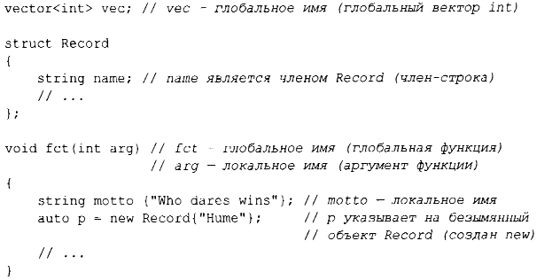

Объявление вносит объявляемое имя в область видимости.
- Локальная область видимости: имя, объявленное в функции (§ 1.3) или лямбда-выражении (§6.3.2), называется локальным именем. Его область видимости простирается от точки объявления до конца блока, в котором находится объявление. Блок определяется
парой фигурных скобок { }. Имена аргументов функции рассматриваются как локальные имена.
- Область видимости класса: имя называется именем члена (или именем члена класса), если оно определено в классе (§2.2, §2.3, глава 4, "Классы"), вне любой функции (§ 1.3), лямбда-выражения (§6.3.2) или перечисления enum class (§2.5). Его
область видимости простирается от открывающей фигурной скобки { охватывающего объявления до конца этого объявления.
- Область видимости пространства имен: имя называется именем члена пространства имен, если оно определено в пространстве имен (§3.4) вне любой функции, лямбда-выражения (§6.3.2), класса (§2.2, §2.3, глава 4, "Классы") или перечисления enum
class (§2.5). Его область видимости простирается от точки объявления до конца его пространства имен.
Имя, объявленное вне прочих конструкций, называется глобальным именем и считается находящимся в глобальном пространстве имен.
Кроме того, могут существовать объекты без имени, такие как временные объекты и объекты, создаваемые с использованием оператора new (§4.2.2). Например:

Объект должны быть построен (инициализирован), прежде чем он будет использован, а при выходе из области видимости - уничтожен. Для объекта пространства имен точкой его уничтожения является конец программы. Для члена точка уничтожения определяется
моментом уничтожения объекта, членом которого он является. Объект, созданный с использованием оператора new, "живет" до тех пор, пока не будет уничтожен оператором delete (§4.2.2).